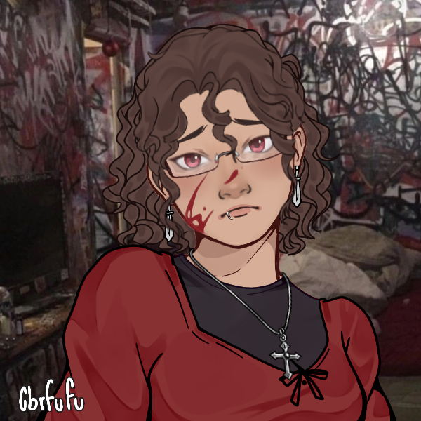
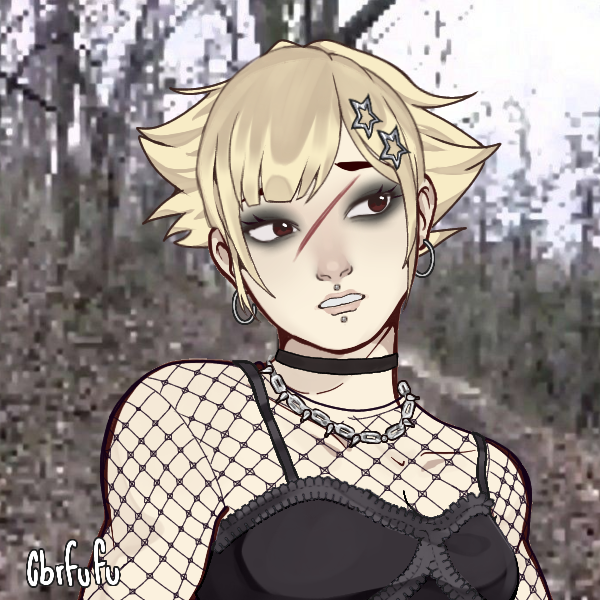
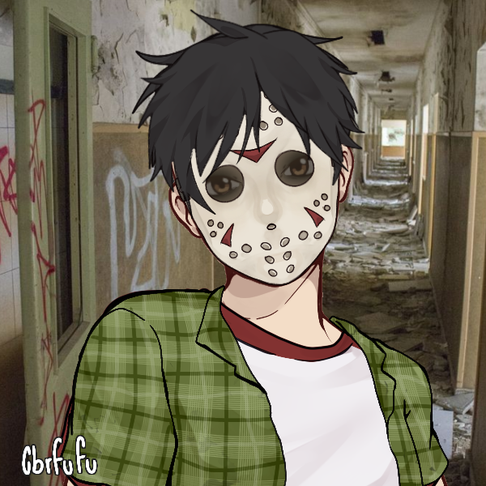

Biteback Co.
We are a team that has a great interest in the grotesque, traveling to different parts of America to dive deep into where your favorite horror films were shot.
Biteback Co. started in 2018, when the three of us, Nica, Kirsty, and Jesse, were in our university's horror club. We were watching
Meet the team behind Biteback Co.
Nica Pierce
My name is Nica and I am the lead writer. I have spent years recording all of the horror spots local to New York and New Jersey. I've been from Brick to Brooklyn, from Poughkeepsie to Passaic searching for the sets of slashers and other horror movies...and sometimes the horrors find me. I will continue to document these frightful areas before the evils eventually claim me.
Kirsty Cotton
In these New Jersey suburbs, the worst villains can be seen wreaking havoc on white pickett fences. These settings are particularly scary because they are happening right in your home.
Jesse Walsh
These films are located in very rural, closed-off areas that add to the creepiness of being alone. States that are full of bustling cities like New York and New Jersey do indeed have rural farm areas!